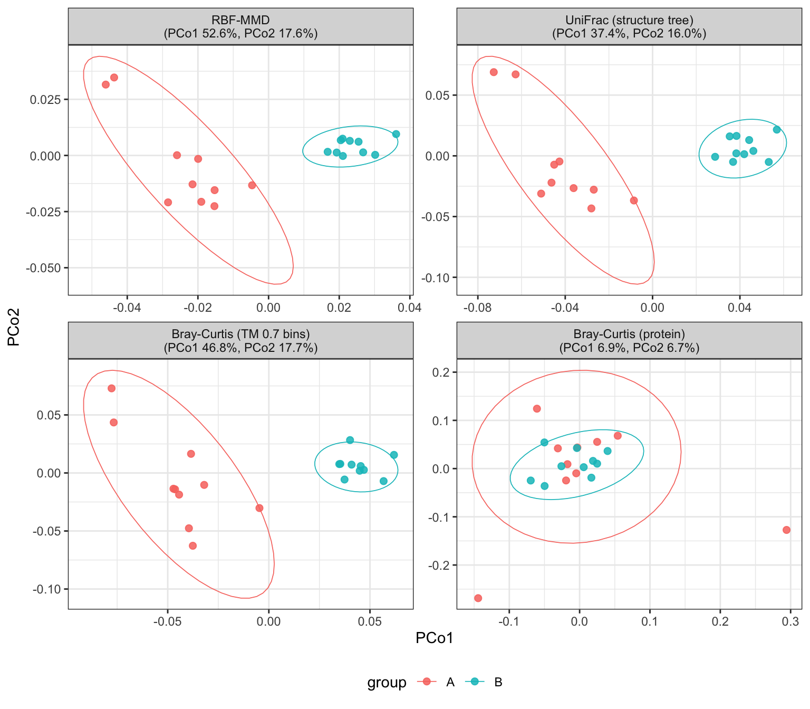

repdist measures the distance between proteins in a
frozen protein language model’s representation space, and lifts that
protein-level distance to a distance between whole samples.
The default representation is TM-Vec, where the
cosine distance between two embeddings approximates
1 - predicted TM-score — that is, structural
homology. That choice is the argument, not an implementation
detail. What usually matters about a microbial community is whether the
function it carries has shifted, and function tracks structure
far more closely than it tracks sequence identity: two communities can
run the same reaction on accessions that never overlap. A distance built
on structural homology sees that; a distance built on accession identity
cannot.
The ground distance is defined for any sequence, including proteins with no tree position and no annotation, so a community’s proteins can be compared without first resolving them to something already named.

Two groups of simulated samples differing
by function, carried on non-overlapping homologs. Sample
distances built on structural homology separate them — by maximum mean
discrepancy over the embeddings, by a structure tree, or by structural
bins. Protein-level Bray-Curtis, which can only ask whether two samples
hold the same accession, sees nothing. Built in
vignette("simulation", package = "repdist").
repdist is an R package. Install the development version
from GitHub:
if (!requireNamespace("remotes", quietly = TRUE))
install.packages("remotes")
remotes::install_github("Yixuan39/repdist")Embeddings run through a pinned basilisk Python
environment, so no manual Python setup is needed.
library(repdist)
seqs <- read_fasta("proteins.fasta")
Z <- embed_proteins(seqs, model = "tmvec")
D <- sample_repdist(counts, Z) # distance between samples
vegan::adonis2(D ~ condition, data = meta)
G <- repdist_matrix(Z) # 1 - predicted TM-score
bins <- bin_proteins(G, min_sim = 0.7) # structural bins for biomarkersTwo vignettes ship with the package: vignette("repdist")
walks the workflow on a package data subset,
vignette("simulation") builds the figure above.
The full re-analysis behind the method, run on the complete protein set rather than the package subset. Both reports use the mouse faecal metaproteome of Blakeley-Ruiz et al., ISME J 19(1) wraf048: six dietary protein sources, quantified by spectral counting.
Data curation — Extended Data Table 1, from spectral counts and inline sequences to a phyloseq object, checked against the published PERMANOVA before anything downstream runs.
Case study — MMD beta diversity and PERMANOVA, structural bins at predicted TM-score 0.7, DESeq2 on the bins, and a functional reading of the most responsive annotated bins, on every protein retained after rarefaction and a 3,000 aa length ceiling.
The sources live in inst/scripts/ on the gh-pages
branch and expect to run from a repdist checkout with
the study inputs under data/test_study/:
inst/scripts/data_curation.Rmd # -> data/test_study/ps.rds
inst/scripts/case_study.Rmd
inst/scripts/case_study_bin_ordination.R # PCoA/UMAP/t-SNE over bin medoidsRun data_curation.Rmd first — the case study reads the
phyloseq object it writes. case_study_bin_ordination.R
reads the embedding cache the case study’s Embedding section writes,
rather than recomputing it.
The study inputs are not redistributed here; the curation report names the files it reads and the accession they come from.
Package source, issues and the vignettes are at github.com/Yixuan39/repdist.
This site is built from the repository’s gh-pages branch.
Released under MIT.